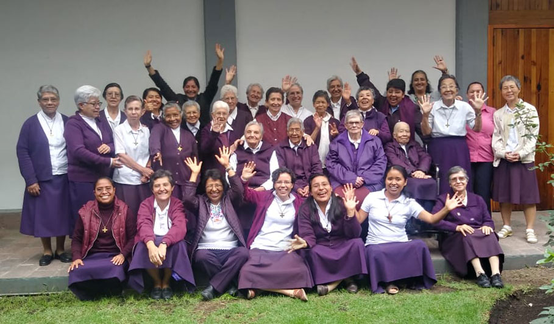

La congregación de las religiosas de la Asunción fué fundada en Paris el 30 de Abril de 1839, por Santa Maria Eugenia de Jesús, guiada por una visión eminentemente cristocentrica y social basada en dos ideas maestras: el reconocimiento de los "derechos de Dios" y la trasnformacion de la sociedad, consecuencia lógica de la puesta en practica de los principios del Evangelio y de la ley de Cristo libertador y rey del universo.
El gran medio para lograrlo es la educación. Esta es la misión que la iglesia católica nos confia, como medio privilegiado para la evangelización de la inteligencia, la formacion del carácter y del compromiso a favor de los hermanos y hermanas, en vistas a la tranformación de la sociedad. La idea original de Santa Maria Eugenia imprime a la Asunción, un carisma especial que se difunde a travez del trabajo que realiza la congregación en todo el mundo.
La Asunción llego al continente americano en 1892, año en que se fundó la primera casa en la ciudad de León, Nicaragua.